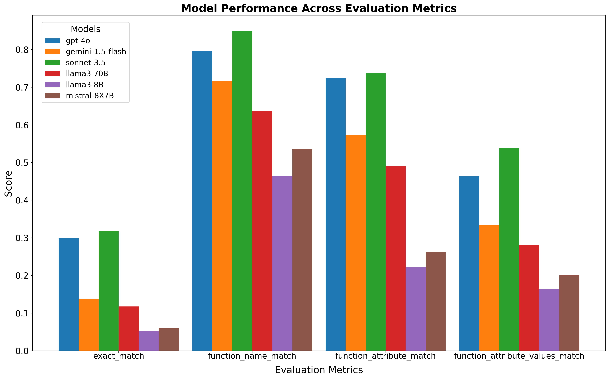

Part II: Comparison of Model Performances on Structured Functional Representation Extraction
Introduction
In the previous blog post, I established a performance baseline using GPT-4o for generating structured data, particularly functional representations, from text using the ViGGO Dataset.
Building on that foundation, I expand the experiment to include a broader range of models, both open-source and proprietary. This comparison aims to provide insights on how well these models perform out of the box in structured data extraction tasks, which is quite crucial for RAG applications, knowledge base construction, and reasoning systems.
I evaluate and compare the performance of these six LLM models:
GPT-4o: OpenAI’s latest iteration of the GPT-4 model, known for its faster generation, advanced natural language understanding and generation capabilities. Currently one of the most popular and capable models.
Claude Sonnet-3.5: Anthropic’s refined language model with enhanced reasoning abilities. It aims to provide more context-aware outputs compared to earlier versions and has recently outperformed GPT-4o on many benchmarks.
Gemini-1.5-Flash: Google DeepMind’s streamlined version of the Gemini model, optimized for faster inference and reduced computational requirements.
llama-3-70b-instruct: Meta’s large-scale instruction-tuned language model, part of the latest LLaMA 3 family, with 70 billion parameters. It’s designed to follow complex instructions and generate high-quality text across diverse domains.
mixtral-8x7b-instruct-v0.1: Mistral AI’s instruction-tuned variant of the Mixtral 8x7B model, known for its mixture-of-experts architecture.
llama-3-8b-instruct: A more compact version of Meta’s LLaMA 3 family, with 8 billion parameters, optimized for instruction following.
Note: I’ve included the smaller
Llama-3-8Bmodel as I plan to finetune it’s base 8B model in coming days. It would help me compare the general instruction finetuned 8B model performance.
Dataset and Prompt Template
For consistency and fair comparison, I used the same ViGGO validation dataset and the prompt template as in the previous blog post. The prompt template and the few-shot examples are designed to guide the models in generating structured functional representations from the given text input:
PROMPT_TEMPLATE = """
Given a target sentence construct the underlying meaning representation of the input sentence as a single function with attributes and attribute values.
This function should describe the target string accurately and the function must be one of the following ['inform', 'request', 'give_opinion', 'confirm', 'verify_attribute', 'suggest', 'request_explanation', 'recommend', 'request_attribute'].
The attributes must be one of the following: ['name', 'exp_release_date', 'release_year', 'developer', 'esrb', 'rating', 'genres', 'player_perspective', 'has_multiplayer', 'platforms', 'available_on_steam', 'has_linux_release', 'has_mac_release', 'specifier']. The order your list the attributes within the function must follow the order listed above. For example the 'name' attribute must always come before the 'exp_release_date' attribute, and so forth.
For each attribute, fill in the corresponding value of the attribute within brackets. A couple of examples are below. Note: you are to output the string after "Output: ". Do not include "Output: " in your answer.
Example 1)
Sentence: Dirt: Showdown from 2012 is a sport racing game for the PlayStation, Xbox, PC rated E 10+ (for Everyone 10 and Older). It's not available on Steam, Linux, or Mac.
Output: inform(name[Dirt: Showdown], release_year[2012], esrb[E 10+ (for Everyone 10 and Older)], genres[driving/racing, sport], platforms[PlayStation, Xbox, PC], available_on_steam[no], has_linux_release[no], has_mac_release[no])
Example 2)
Sentence: Were there even any terrible games in 2014?
Output: request(release_year[2014], specifier[terrible])
Example 3)
Sentence: Adventure games that combine platforming and puzzles can be frustrating to play, but the side view perspective is perfect for them. That's why I enjoyed playing Little Nightmares.
Output: give_opinion(name[Little Nightmares], rating[good], genres[adventure, platformer, puzzle], player_perspective[side view])
Example 4)
Sentence: Since we're on the subject of games developed by Telltale Games, I'm wondering, have you played The Wolf Among Us?
Output: recommend(name[The Wolf Among Us], developer[Telltale Games])
Example 5)
Sentence: Layers of Fear, the indie first person point-and-click adventure game?
Output: confirm(name[Layers of Fear], genres[adventure, indie, point-and-click], player_perspective[first person])
Example 6)
Sentence: I bet you like it when you can play games on Steam, like Worms: Reloaded, right?
Output: suggest(name[Worms: Reloaded], available_on_steam[yes])
Example 7)
Sentence: I recall you saying that you really enjoyed The Legend of Zelda: Ocarina of Time. Are you typically a big fan of games on Nintendo rated E (for Everyone)?
Output: verify_attribute(name[The Legend of Zelda: Ocarina of Time], esrb[E (for Everyone)], rating[excellent], platforms[Nintendo])
Example 8)
Sentence: So what is it about the games that were released in 2005 that you find so excellent?
Output: request_explanation(release_year[2005], rating[excellent])
Example 9)
Sentence: Do you think Mac is a better gaming platform than others?
Output: request_attribute(has_mac_release[])
Give the output for the following sentence:
{input}
"""Generating the responses
I used the respective official API calls for the closed models (GPT-4o, Gemini-1.5-flash, Claude-1.5-Sonnet) and the Replicate API client for open-source models (Llama-3-70B, Llama-3-8B, Mistral-8x7B).
For detailed information on API endpoints and the process of generating responses for all models, please refer to the Generate_responses_all_llms.ipynb notebook.
Generating responses for this experiment had the following associated costs:
| Model/API | Cost |
|---|---|
| GPT-4o API | ~ $2.5 |
| Claude-1.5-Sonnet API | ~ $3.5 |
| Replicate API | ~ $3 |
| Gemini-1.5-flash API | Free* |
| Total | ~$9 |
_*for limited usage_
Evaluation Strategy
To assess the models’ performance, I used the same evaluation criteria as in the previous post:
- Function Name Match: The function name must match the ground truth function name.
- Function and Attributes Match: The generated function name and attributes must match the ground truth function attributes. However, the order of the attributes does not matter.
- Function, Attributes, and Values Match: The generated function name, attributes, and values must match the ground truth function attributes and values. The order of the attributes and values does not matter.
- Exact Match: The generated function must exactly match the ground truth function.
Note: I implemented custom Python functions using regex and string manipulation to calculate these metrics, rather than relying on another LLM for evaluation. This approach helps avoid potential biases that might be introduced by using an LLM in the evaluation process.
For the complete evaluation code and functions used, please refer to the Compare_models_performances.ipynb notebook.
Comparing the models performance

Based on the evaluation metric plot:
Claude Sonnet-3.5andGPT-4oconsistently outperform other models across all metrics.Claude Sonnet-3.5performs better thanGPT-4o, aligning with all the twitter chats about its superior performance.Gemini-1.5-Flash, despite its optimization for speed, maintains competitive performance for less stringent metrics but struggles significantly with exact matches.- The performance gap between the top-performing models and others widens sharply for more stringent metrics.
- As expected, the smaller
Llama-3-8Bmodel shows the lowest performance, highlighting the evident size advantage of larger models. Mistral-8x7B'sperformance is lower than anticipated, suggesting lower instruction-following capabilities.
Some key observations
Based on the quickly eyeballing the generated responses:
- Almost all models consistently captures straightforward attributes such as player perspective and multiplayer status.
- For queries involving multiple attributes or conditions, the model sometimes misses or misinterprets parts of the input.
- The models struggles with capturing subtle distinctions in opinions and inferring information that is implied but not explicitly stated in the text. For example, models struggled to differentiate between
inform,give_opinionandsuggest.
Conclusions
This comparison provides valuable insights into the capabilities of various LLMs in functional representation extraction. As expected, the proprietary large models like Claude Sonnet-3.5 and GPT-4o perform best out of the box, with Claude Sonnet-3.5 being the best.
One can argue that these results may not fully represent the models’ maximum capabilities. Different model-specific prompt engineering approaches or dynamic few-shot examples could potentially improve performance further. However, my aim is just to assess how well a model perform without fancy RAG/function calling/complicated prompt engineering approaches.
Next steps….
I plan to fine-tune the base
Llama-3-8Band other smaller models (likePhiandGemma) on the ViGGO dataset to assess whether a fine-tuned smaller model can compete with or surpass the performance ofClaude Sonnet-3.5andGPT-4o.At the same time, investigate the trade offs like inference speed, accuracy, and latency associated with fine-tuned smaller models and propreitory models api calls.
References
- Part I blog post of series
- ViGGO Dataset
- Notebook I: Generate_responses_all_llms.ipynb
- Notebook II: Compare_models_performances.ipynb
Thanks for reading! If you have any questions or feedback, please let me know on Twitter or LinkedIn.